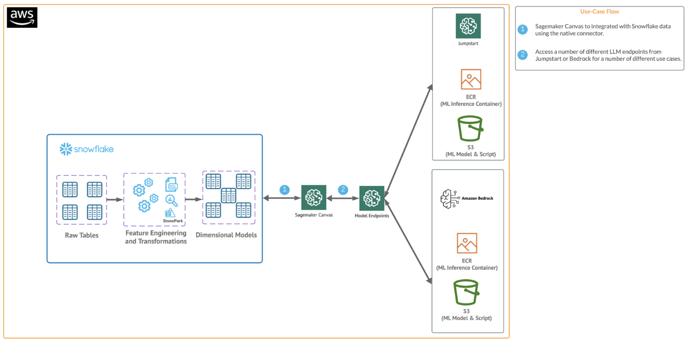
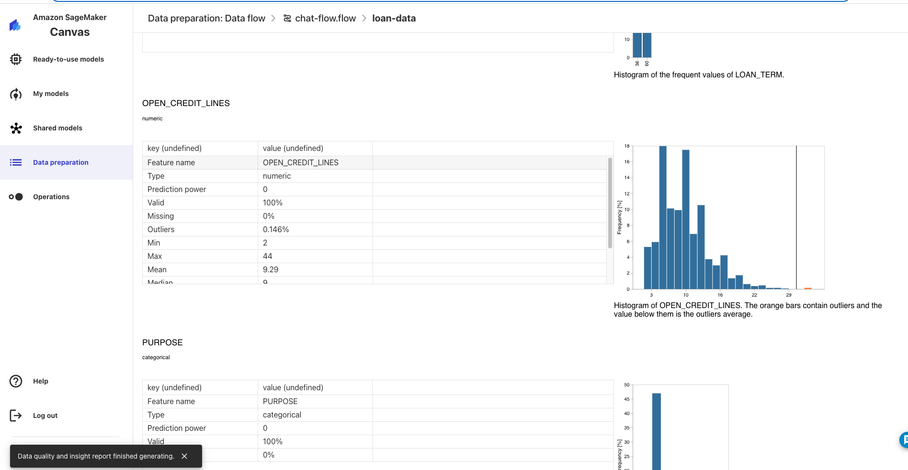

Amazon SageMaker is a fully managed machine learning service. With SageMaker, data scientists and developers can quickly and easily build and train machine learning models, and then directly deploy them into a production-ready hosted environment. It provides an integrated Jupyter authoring notebook instance for easy access to your data sources for exploration and analysis, so you don't have to manage servers.
Amazon SageMaker Canvas is a visual interface that simplifies the process of building, training, and deploying machine learning models. It allows users to construct and manage machine learning workflows through a drag-and-drop interface, making it easier to create and iterate on machine learning models without writing extensive code.
Additionally, Canvas now has native integrations with AWS Generative AI services like Sagemaker Jumpstart and Bedrock.
This quickstart is designed to serve as an introduction for using Snowflake with Canvas and Generative AI services.
Prerequisites
- Familiarity with Snowflake and a Snowflake account
- Familiarity with SageMaker and an AWS account
- Familiarity with Canvas and a Canvas Service available in Sagemaker
- Active Bedrock service
You'll Learn
- How to get started with Sagemaker Canvas
- Using Snowflake with Sagemaker Canvas
- Using Generative AI with Snowflake data in Canvas
What You'll Need
- A free Snowflake Account
- AWS Account
- The AWS account should be a sandbox account with open network policies or you you should create a VPC in the same region as the Snowflake account
- In the VPC create subnets in a few AZs with an internet gateway to allow egress traffic to the internet by using a routing table and security group for outbound traffic
What You'll Build
You will build a Canvas flow that leverages Snowflake data and AWS Generative AI capabilities
- Connect to Snowflake data from Canvas
- Build a Canvas data flow
- Utilize Generative AI capabilities in Sagemaker Canvas using chat with your data
The end-to-end workflow will look like this: 
In this use case you will build a binary model based on the ‘Loan Fraud Prediction' dataset from Kaggle and AWS. Also, Important to note that you can always supplement your data with Snowflake Marketplace data.
The first thing we will do is create a database and warehouse in your Snowflake environment. Run the below code in a Snowflake worksheet.
--create database and warehouse
use role accountadmin;
CREATE OR REPLACE WAREHOUSE HOL_WH WITH WAREHOUSE_SIZE='X-SMALL';
CREATE OR REPLACE DATABASE CANVAS_DB;
--create stage
USE DATABASE CANVAS_DB;
CREATE OR REPLACE STAGE LOAN
URL='s3://loan-data-snowflake-qs/'
FILE_FORMAT = (TYPE = 'csv');
--create loan_one table
CREATE OR REPLACE TABLE LOAN_ONE
(ID NUMBER,
LOAN_STATUS STRING,
LOAN_AMOUNT NUMBER,
FUNDED_AMOUNT_BY_INVESTORS NUMBER,
LOAN_TERM NUMBER,
INTEREST_RATE NUMBER,
INSTALLMENT NUMBER,
GRADE STRING,
SUB_GRADE STRING,
VERIFICATION_STATUS STRING,
ISSUED_ON DATE,
PURPOSE STRING,
DTI NUMBER,
INQUIRIES_LAST_SIX_MONTHS NUMBER,
OPEN_CREDIT_LINES NUMBER,
DEROGATORY_PUBLIC_RECORDS NUMBER,
REVOLVING_LINE_UTILIZATION_RATE NUMBER,
TOTAL_CREDIT_LINES NUMBER);
COPY INTO LOAN_ONE FROM @LOAN/loans-part-1.csv
FILE_FORMAT=(TYPE = 'csv' FIELD_DELIMITER = ',' SKIP_HEADER = 1);
select top 10 * from LOAN_ONE;
--Create loand_two table
CREATE OR REPLACE TABLE LOAN_TWO
(ID NUMBER,
EMPLOYMENT_LENGTH NUMBER,
EMPLOYER_TITLE STRING,
HOME_OWNERSHIP STRING,
ANNUAL_INCOME INT);
COPY INTO LOAN_TWO FROM @LOAN/loans-part-2.csv
FILE_FORMAT=(TYPE = 'csv' SKIP_HEADER = 1);
select top 10 * from LOAN_TWO;
What you have done here is copied over two files from an open S3 bucket and created two new tables inside of a new database in Snowflake. We will access these tables from Canvas to explore them with Generative AI capabilities.
Your Snowflake environment should look like this: 
Open up your Sagemaker Canvas application and click on the datasets blade (this is changing to the Data Preparation blade soon) on the left side then click create in the upper left and select a tabular dataset then name the dataset "loan-data" and click create. 
Navigate to the Data Source menu at the top left and select Snowflake as the data source you will then populate your Snowflake AccountID and utilize username and password to connect to Snowflake. The connection should look similar to this. 
Note: We used a simple username and password to authenticate, but users may want to consider additional options to such as Oauth which is supported by Canvas to Snowflake Canvas Oauth
Canvas has this great interface with the Snowflake connection where you can perform joins and transformations on your Snowflake data pushing down the compute and preparing the dataset for analysis.
Go ahead and selection the "HOL_WH" warehouse from the Warehouse dropdown then find the LOAN_ONE and LOAN_TWO tables in CANVAS_DB.PUBLIC and drag and drop them into the workspace. Canvas will recognize that the tables will be joined on the ID field. For transformations this all that we will be doing in this lab, but you can check out this link to learn about all of the data prep functionality inside of Canvas. Additionally, you scroll down to the preview and look at the exploratory capabilities in Canvas
Your workspace should look something like this:

Click on "Create Dataset" and now you've created a Canvas dataset!
Before chatting with data you will want to make sure that you have access to Anthropic models through the Bedrock service. Head to the Bedrock service and select "Model Access", then check to make sure that you have access to the Anthropic models. You can request access if you don't have access. The chat with data functionality uses Anthropic models via Bedrock so expect standard Bedrock charges to apply when using chat with data. 
"Chat with data" is part of the Canvas data flow experience which allows users to analyze and prepare their data with a no code experience and create an easy to understand flow that tracks the lineage of the analysis and preparation steps. To start a data flow you have to first access your data.
In the Dataset (or Data Preparation) blade you will now click on the dataset that you just created and click crate a data flow at the top of the screen and name it "chat-flow" then click create. 
Now, lets walk through some prompts. Select "chat with data" at the top and in the prompt type "what is the average employment length" and hit enter. It should take several seconds, but you should get 5.09 years. Notice that you didn't have to use the exact field name that's in the data.
Let's try do some aggregations by some other parameter. Type "what is the average loan amount by purpose", it looks like small business loans are the largest on average.
Now let's try producing some plots, type "plot interest rate against loan amount" and now you can see a plot that you can download along with the code that was used to produce it! 
Let's produce a time series plot by typing "plot the monthly loan amount". You should produce a plot that looks like this: 
You can see how valuable chat with data is for doing some exploratory analysis very quickly or you can produce formal analyses using plain text and download many of the artifacts.
Lastly, let's type "can you detect anomalies in the data" and after several seconds you will get a prompt to add this analysis. Click "add to analysis" and after ~1 minute it will be added to the analysis. Now click on the data flow in the breadcrumbs at the top and click into the Data Quality and Insights Report that has been added to the data flow. You can see the new insights report complete with anomaly detection that has been added to your data flow! 
This quickstart is just that, a quick way to get you started with using Canvas with Chat with Data with Snowflake. We encourage users to continue to explore using their Snowflake with Canvas and the many ways that Canvas allows users to leverage Generative AI services easily with their data.
Also, worth mentioning that at the time this quickstart was written Canvas is just rolling out all of its Generative AI capabilities, there will be more to come in addition to "chat with your data" so be on the lookout for additional functionality.
What We covered
- Connecting to Snowflake data from Sagemaker Canvas
- Build a Canvas dataset and data flow
- Utilizing Generative AI functionality in Canvas with Snowflake data to generate insights
Additional Considerations
- There are some great blogs on Medium regarding Snowpark, SageMaker and using Snowflake with AWS.
- Sagemaker Canvas
- AWS and Snowflake
- Snowpark for python with SageMaker
- Snowflake and Direct Data Integration
If you have any questions, reach out to your Snowflake account team!